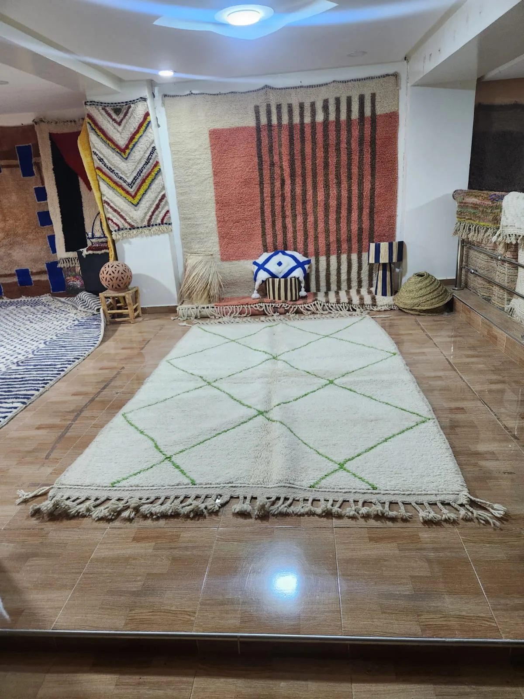

Understanding wool first
Natural wool — the kind used in authentic Moroccan Berber rugs — is a remarkable fibre. It is naturally soil-resistant (dirt sits on the surface rather than embedding in the fibre), naturally anti-microbial, and extraordinarily resilient under foot traffic. A well-made wool rug handled correctly will look better at twenty years than a synthetic rug looks at five.
But wool has specific vulnerabilities. It is sensitive to heat — high temperatures cause the fibres to felt, shrink and mat permanently. It is sensitive to alkaline chemicals — most household detergents are alkaline and will strip the natural lanolin from wool, weakening it. And it is sensitive to over-wetting — wool holds water for a long time, and a wet rug on a floor is a breeding ground for mould and mildew.
Everything in this guide follows from understanding those three sensitivities: no heat, no harsh chemicals, no over-wetting.
"A Moroccan wool rug that has been washed and dried correctly will look and smell as fresh as the day it arrived — and the natural lanolin in the wool keeps it that way for years."
Routine care — weekly
The most important thing you can do for your rug requires no cleaning at all. It is how you vacuum it.
- Fold the fringe away from the vacuum head before you begin. Fringe is the most commonly damaged part of a rug through vacuuming — the suction can pull and snap the warp threads. Fold it onto the rug surface and vacuum it gently by hand.
- Vacuum in the direction of the pile — run your hand across the surface and feel which direction the fibres lie flat. Always vacuum in that direction. Going against the pile forces dirt deeper into the foundation and can stress the knots.
- Do not use a beater bar or rotating brush attachment. These are designed for wall-to-wall carpets with a short, dense pile. On a hand-knotted Moroccan rug they will pull fibres, loosen knots and damage the fringe.
- Vacuum both sides every few months. Flipping the rug and vacuuming the back dislodges accumulated grit from the foundation before it can work its way up and abrade the pile from below.
Rotate your rug 180 degrees every six months. This ensures even wear — particularly important if one area is under direct sunlight or receives more foot traffic than the other.

Spot cleaning — for spills
Speed matters more than anything else with spills. The sooner you act, the less a spill sets into the fibres.
- Blot immediately with a clean white cloth or paper towel. Press down firmly and lift — do not rub, which spreads the spill and works it deeper into the pile. Work from the outer edge of the spill inward toward the centre.
- For water-based spills (tea, coffee, juice, wine): after blotting, dampen a clean cloth with cold water and blot the area again. Repeat until no more colour transfers to the cloth. Then press a dry towel onto the area and apply weight (a stack of books works) for 20 minutes to draw out remaining moisture.
- For oil-based spills (butter, grease, food): sprinkle a small amount of baking soda or cornflour on the spill first and leave for 15 minutes — this absorbs the oil before it sets. Brush away gently, then proceed with a small amount of diluted wool wash (one teaspoon in a litre of cold water) applied with a damp cloth and blotted dry.
- Dry fully. Never leave a damp area on the rug. Use a fan or open windows to circulate air and ensure the area is completely dry before putting the rug back in position.
Blot immediately and thoroughly. Then pour a small amount of cold sparkling water directly onto the stain — the carbonation helps lift the pigment. Blot again. Do not add salt (an old myth that can actually set some stains). If the stain remains, a professional clean is the right next step — do not try to scrub it out.
Deep cleaning — once every 2–3 years
A full wash is necessary every two to three years for a rug in regular use. You have two options: professional hand-washing, or hand-washing it yourself outdoors.
Professional cleaning (recommended). Find a rug cleaning specialist — not a carpet cleaner, not a dry cleaner. A specialist who works with hand-knotted oriental and Moroccan rugs will hand-wash the rug, rinse it thoroughly and dry it correctly (flat, not hanging, to prevent distortion). This is the safest option for any rug over £500.
Home hand-washing is possible for smaller rugs on a warm, dry day with outdoor space:
- Lay the rug flat on a clean, hard outdoor surface (a patio or driveway). Vacuum both sides first.
- Mix a small amount of wool wash (never standard detergent) in a bucket of cold water.
- Use a soft-bristled brush or sponge to work the solution gently into the pile in the direction of the fibres. Work in sections. Do not scrub.
- Rinse thoroughly with a garden hose on low pressure until the water runs clear. Incomplete rinsing leaves a residue that attracts dirt.
- Lay flat to dry in shade — never in direct sunlight, which can fade natural dyes. Elevate it on sawhorses or a rack to allow air underneath. Turn it over after a few hours. Allow to dry completely — this may take 24–48 hours.
What never to do
- Never machine wash. The agitation of a washing machine causes wool to felt — the fibres interlock permanently, shrinking and matting the pile in a way that cannot be reversed. This will ruin your rug completely.
- Never steam clean. The combination of heat and moisture is the worst possible treatment for wool. Steam opens the fibre, causes felting, and can permanently distort the rug.
- Never use standard household detergent. Most laundry and cleaning products are alkaline. Wool needs a pH-neutral or slightly acidic cleaner. Even small amounts of standard detergent strip lanolin and weaken the fibres over time.
- Never dry in direct sunlight. Prolonged direct sunlight fades natural dyes, especially plant-based dyes. Dry flat in shade.
- Never hang a wet rug. The weight of a saturated rug distorts its shape. Always dry flat.
- Never rub a spill. Rubbing spreads it and embeds it. Always blot.
Storage
If you need to store your rug for an extended period, do it correctly or risk permanent damage.
- Clean the rug thoroughly before storing — dirt and oils left in the pile attract moths, which cause irreversible damage.
- Roll the rug with the pile facing inward around a tube or rolled cardboard. Never fold — fold lines become permanent creases in the pile.
- Wrap in breathable fabric (cotton or muslin) — never plastic, which traps moisture and causes mildew.
- Store flat or upright (rolled), never stacked under weight.
- Add natural moth deterrents such as cedar blocks or lavender sachets inside the wrapping.
- Check every few months and air the rug for a day if storing for longer than six months.
Have a question about caring for your Tiziri rug? We are always happy to advise.
Contact UsThe care guide summary
Weekly: vacuum in the direction of the pile, no beater bar, fringe folded away. Rotate every six months.
Spills: blot immediately, cold water, wool-safe cleaner, dry completely. Never rub.
Every 2–3 years: professional hand-wash, or careful hand-wash outdoors in cold water with wool wash. Dry flat in shade.
Never: machine wash, steam clean, household detergent, direct sun drying, hanging wet, rubbing spills.
Do this, and your rug will still be beautiful in thirty years. The Berber women who wove it expected it to last that long — they were right.
You can also read our full rug care guide for additional advice on specific rug types.